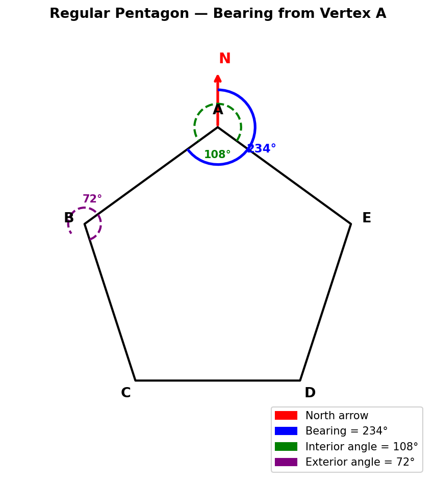

A regular pentagon is shown. A bearing is measured at one vertex along an edge.
Find the interior angle of the pentagon and state how to read the bearing correctly.
[3 marks]

Strategy. For a regular $n$-gon, the exterior angle is $360^{\circ}/n$ (the exterior angles sum to $360^{\circ}$, one full turn).
Exterior angle of regular pentagon
$$\text{exterior} = \frac{360^{\circ}}{5} = 72^{\circ}.$$Strategy. Interior and exterior angles are supplementary (they lie on a straight line): interior $= 180^{\circ} - \text{exterior}$.
Interior angle
$$\text{interior} = 180^{\circ} - 72^{\circ} = 108^{\circ}.$$Sense check. A pentagon is close to a square ($90^{\circ}$) but has one more side, so each interior angle is a bit larger: $108^{\circ} > 90^{\circ}$ ✓.
Strategy. A bearing is the clockwise angle from North at the vertex to the direction of travel, written as three digits.
Procedure
1. Draw the North arrow at the vertex where the bearing is measured.
2. Read the clockwise angle from North to the target edge.
3. Write as three digits (e.g. $047^{\circ}$, not $47^{\circ}$).